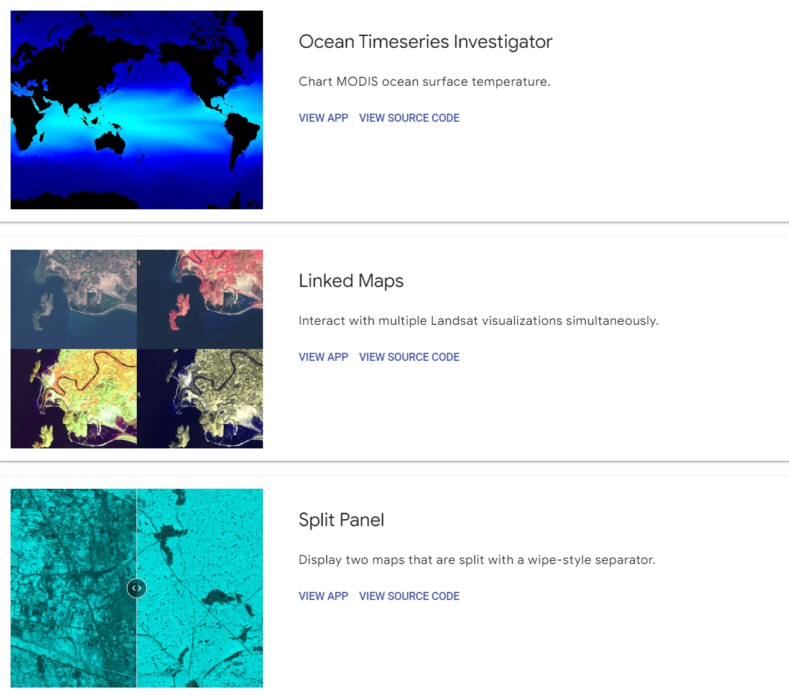
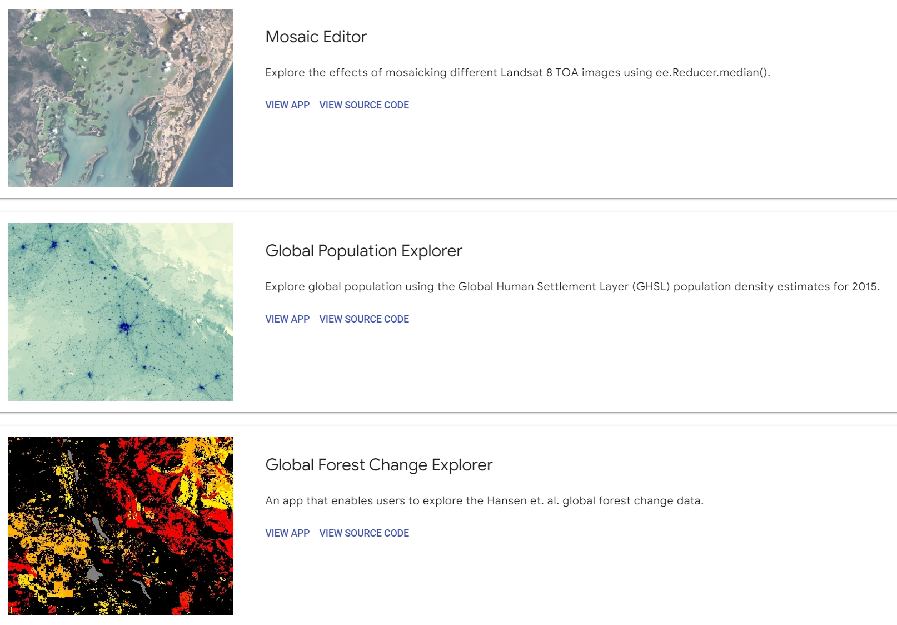
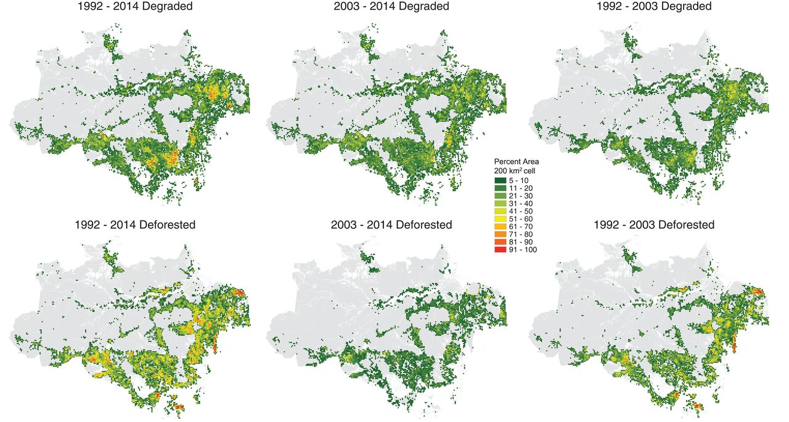

5 Week 5 - Introduction to GEE
5.1 Summary
This week I stepped into a whole new world, GEE (Google Earth Engine), which is a cloud-based platform that delivers a multi-petabyte catalog of satellite imagery for planetary-scale analysis.
It’s an incredible resource for anyone who wants to explore the world through satellite imagery.
We can not only gain access to remote sensing data from satellites, airborne, digital elevation models, but also we can turn this geospatial data into actionable insights through the platform’s fast computations and 1000+ types of operators for analysis.
And the most important is that it’s completely free!!!
From land use to weather data, it’s through its vast (and growing) catalog of remote sensing data that we can see the world through a different lens. We can have access to many key datasets on this platform, such as Landsat (30m), Sentinel-2 (10-30m), MODIS (250m daily), Sentinel-1 (Radar), Land cover, Weather and Climate (NOAA) and so on.

Let’s step into the world of GEE and see how amazing it is!
5.1.1 What Can Google Earth Engine Do?
GEE tackles the challenge of open analysis in remote sensing with a focus on getting results. It’s able to avoid any bottlenecks because it’s able to adjust the size of its clusters based on how much demand there is for a data product.
| Functionality | Description |
|---|---|
| Downloading an Image | pick an extent, projection, data type, band, date, and resolution |
| Performing Library Functions | chain algorithms together for further analysis such as a band combination function |
| Filtering a Collection | use the metadata to filter everything from the amount of cloud cover to the type of sensor |
| Mapping an Algorithm to an Image Collection | apply it to a full collection like the entire United States with a batch computation instead of applying an algorithm to a single image |
| Computing Aggregate Statistics | calculate the amount of area within an extent to check if it meets certain criteria |
| Building Tabular Reports | create tabular reports to show specific information in a table format such as summarizing a detailed list of data, highlighting specific metrics, or showing comparisons between different sets of data |
5.1.2 Geospatial Processing Functions
GEE contains more than 1000 data types and operators to help lay a solid foundation for any type of remote sensing analysis.

In addition to these analysis tools, there are other specialty types of algorithms. For instance, cloud and shadow filtering algorithms help remove artifacts so we can focus your analysis on the Earth’s surface.
But one of the most exciting areas of development in GEE is a shift to machine learning algorithms and deep neural networks. For example, (1) SVM (2) Random forests (3) K-Means (4) CART
5.1.3 How to get started?
Isn’t it amazing and powerful! I can’t wait to operate it after hearing all this. If you want to learn how to do it, but are a complete beginner like me, I found the video below very helpful.
5.2 Applications
5.2.1 GEE Web Application Examples
On GEE’s homepage we can see that there are six curated applications, from time-lapse imagery to global forest change web maps. Each one demonstrates its powerful computing and how it can lead to making informed decisions for the environment.
Ocean Timelapse: one of the most powerful features of GEE is its vast amount of temporal data. With over 35+ years of imagery, it’s like we’re traveling back in time on an interactive map of the ocean.
Linked Maps: shows separate viewports with different band combinations. While the natural color is similar to what the human eye sees, the color-infrared, Land/Water, and Vegetation viewport highlights other land use features.
Split Panel: contains a slider with two separate images side-by-side. We can compare two images from different dates beside each other to easily check for the differences between them.
Collection Mosaic: allows us to select from a group of Landsat-8 images, and based on it, the app will generate a mosaic using the median values.
Global Population Explorer: after selecting a country, it dynamically creates a graph or table with the population density of that country.
Global Forest Change: shows the results of global forest change using Landsat imagery between 2000 and 2016. We can interactively pan and zoom around in app and can symbolize deforestation based on the year of the loss or by the percent of tree cover.
 
Source:Google Earth Engine
5.2.2 Monitor Global Forest Changes
The most impressive application of GEE to me is illegal deforestation in Brazil. The teacher mentioned this very interesting case in the first week class, which aroused my great interest in GEE at that time.
Forests are critical ecosystems for fighting climate change, supporting livelihoods and protecting biodiversity.
Due to its vast forest resources, Brazil has always been targeted by international and domestic loggers, leading to massive human-induced destruction of the Amazon rainforest. In the past, illegal loggers took advantage of the limitations of technology and monitoring to avoid detection and prosecution. They carefully planned to cut down areas smaller than one square kilometer to escape monitoring at the kilometer resolution.

However, the emergence of GEE changed all. To create the global forest map, GEE used a network of cloud-based servers to process 650,000 images across 10,000 computers working in parallel. It would have taken a solo computer 15 years to do the job.
GEE’s 30-meter high resolution ensures that even the smallest environmental changes are detectable, greatly increasing the ability to detect illegal logging activities. As a result, about 100 lawsuits due to illegal logging were filed in just one year, compared to almost none in the previous 20 years.
Now, with the application below, we can easily access the global forest map, monitor forest changes in real time, and effectively expose and combat illegal logging activities.
5.2.3 Monitor Natural Disaster
The UNI-Spider Knowledge Portal platform has been using the GEE as a tool to try to analyse and mitigate natural disasters. They use Sentinel-1 SAR data from Google Earth Engine for flood mapping and damage assessment, which is used to provide a comprehensive overview of flooding from small communities to countries (UNOOSA/UN-SPIDER, 2020). In addition to the outline of flood areas, this code produces information about farmland affected to better plan for food security concerns after a disaster and the number of families that have been or could be affected by natural disasters.

5.2.4 Building Footprints
I have to mention this because it is closely related to the topic of my dissertation. A building footprint dataset contains the two dimensional outlines of buildings in a given area. Currently, GEE hosts one building footprint dataset which covers all of Africa. In 2022, Microsoft released a free global building footprint dataset, though to use it in Earth Engine we have to download it from their GitHub page and upload it manually to GEE. The same goes for OpenStreetMap (OSM), a public database of building footprints, roads, and other features that also contains useful annotations for many buildings indicating their use. The following great video teaches us how to map anything with freely available location data (OSM data).
5.3 Reflection
This week, the introduction to Google Earth Engine (GEE) was a revelation, showcasing the staggering advancement in technology and data analytics is changing our lives and the world, also providing innovative means to solve some long-standing issues.
Initially, I, who first came into the coding world last semester and only learned R and Python, was apprehensive about using JavaScript😟. However, thanks to the plethora of tutorials available, now I found the required scripting are manageable. Its user-friendly nature and the direct access to analysis-ready data significantly enhanced my learning experience. Adapting to Earth Engine’s quirks—such as the inability to run code blocks independently, necessitating the execution of the entire script each time—was part of the learning curve.
After this week, I have found it really enjoyable to interact with GEE, its ability and speed to process large amounts of data (compared to what we have previously used with SNAP and R) is amazing and has revolutionised the way we approach and solve critical environmental problems. My current biggest hope is that such cool software will remain free, and I eagerly look forward to exploring the rest of it in depth🤩.